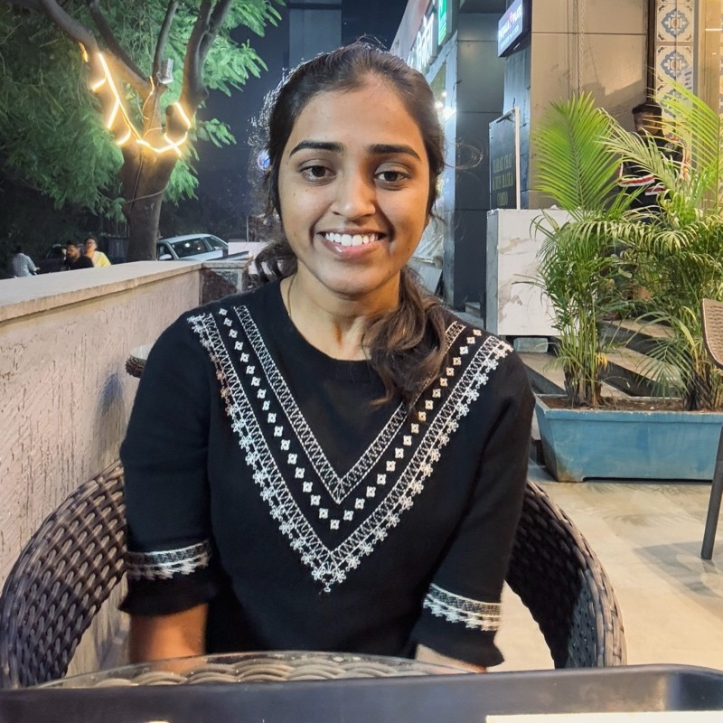

Hi, I am Pravalika and I'm a |
Software Engineer with experience building scalable cloud apps, optimizing CI/CD, and extracting data insights. Expertise in APIs, microservices, DevOps, and automation. Also freelance in cloud infrastructure, system design, web apps, and automation for SMBs.



My Journey
Data Analyst & Developer @ TCS
Mar 2021 – Present | Hyderabad, India
- Managed AWS cloud infrastructure (EC2, Lambda, EKS).
- Automated CI/CD pipelines using GitLab CI/CD and Docker.
- Developed backend REST microservices for British Telecom.
- Built batch processing scripts with Python and Shell.
Freelance Developer @ DOPA Thailand
Sep 2021 – Dec 2021 | Bangkok, Thailand
- Developed an Android app for biometric enrollment.
- Integrated NFC sensor to read Thai National Smart ID cards.
Intern @ DRDO, Imarat
June 2019 – July 2019 | Hyderabad, India
- Designed and simulated a Signal Conditioner using PSPICE.
B.Tech, ECE @ MVSR Engineering
Sep 2017 - Aug 2018 | Hyderabad, India
- Graduated with a major in Electronics & Communication.
My Toolkit
Programming & Frameworks
PythonJavaJavaScriptDjangoFastAPISpring Cloud
Databases & Comms
SQLMongoDBRedisRESTful APIsGraphQLApache Kafka
Cloud & DevOps
AWS & GCPDockerKubernetesJenkinsGitOpenshift
Testing & Other
SonarQubeSeleniumMachine LearningAgile/Scrum